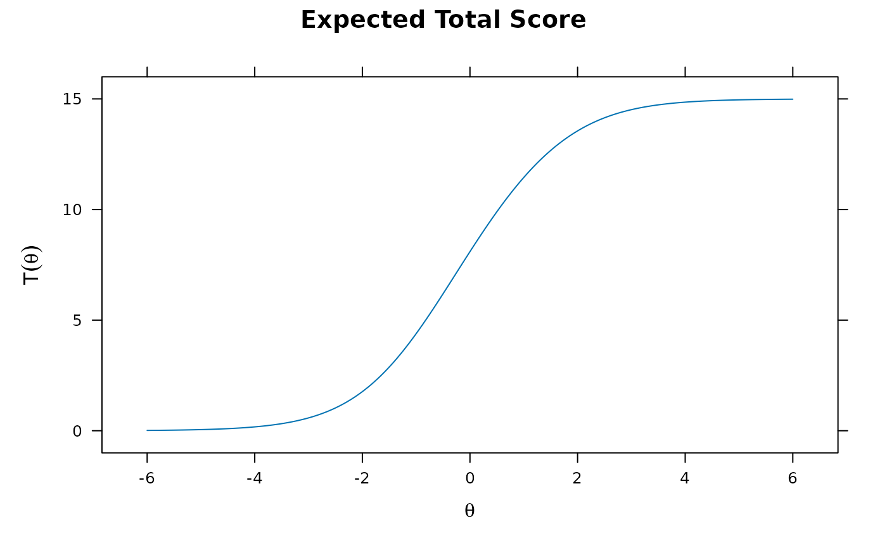
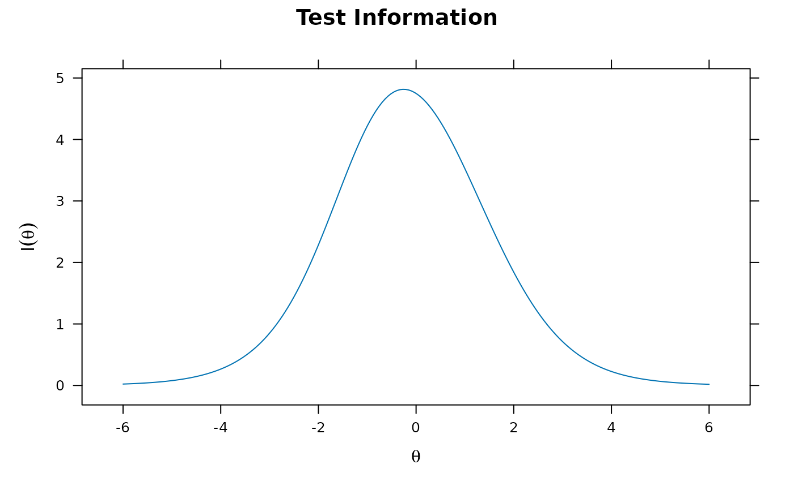
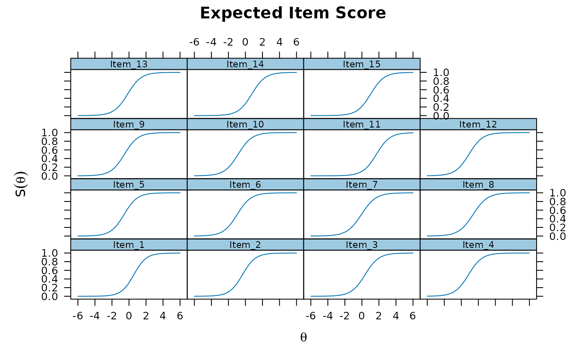
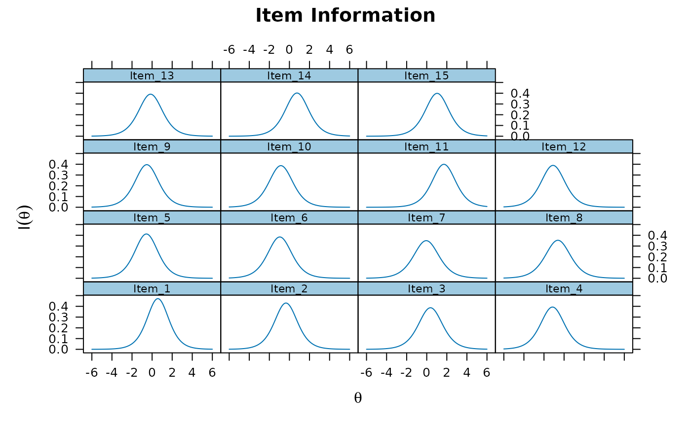
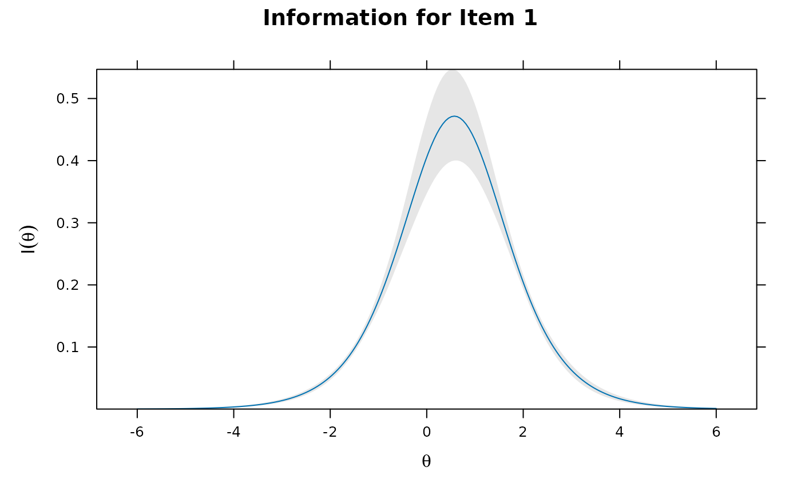
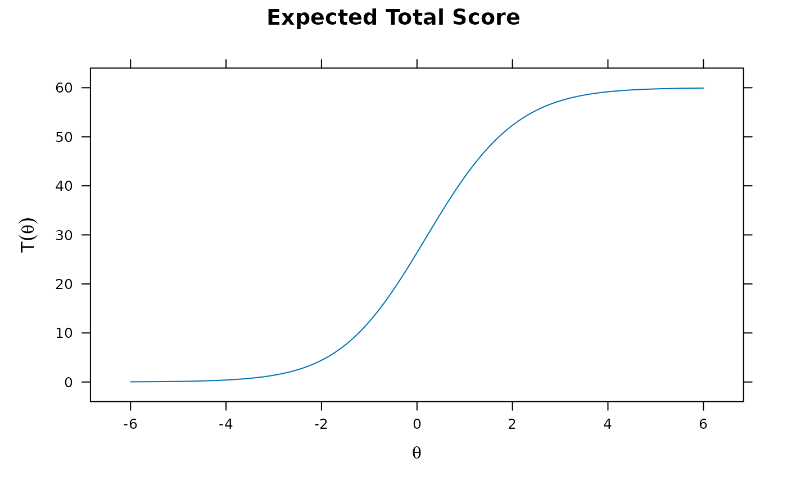
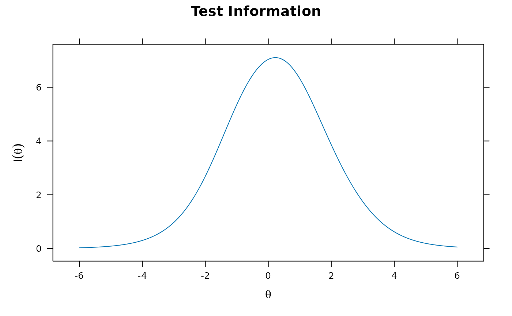
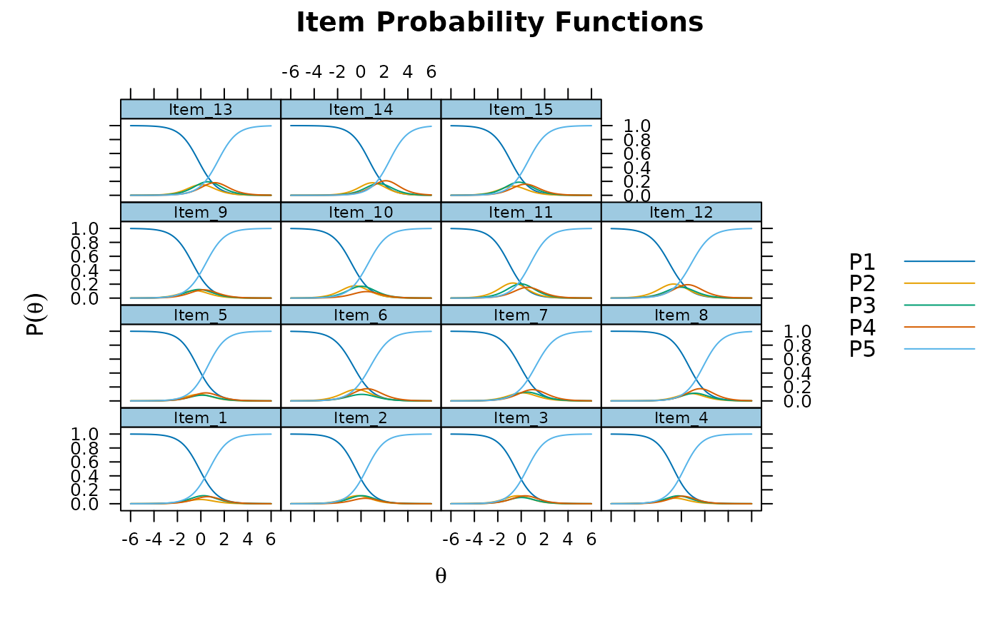
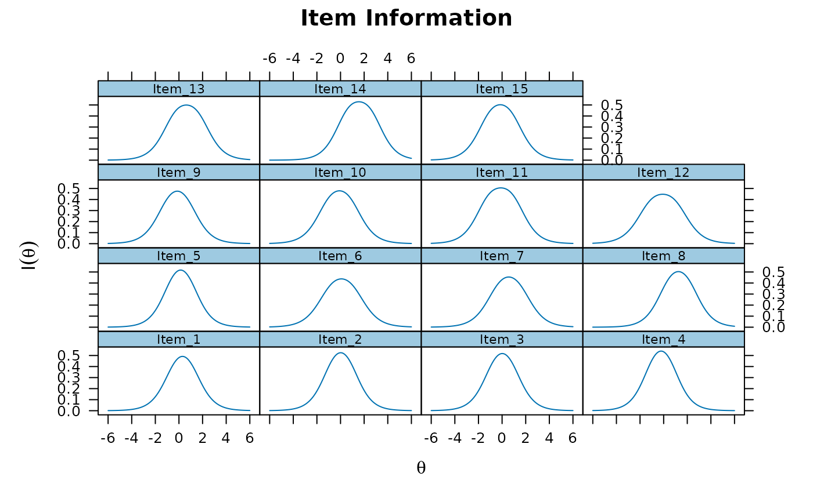
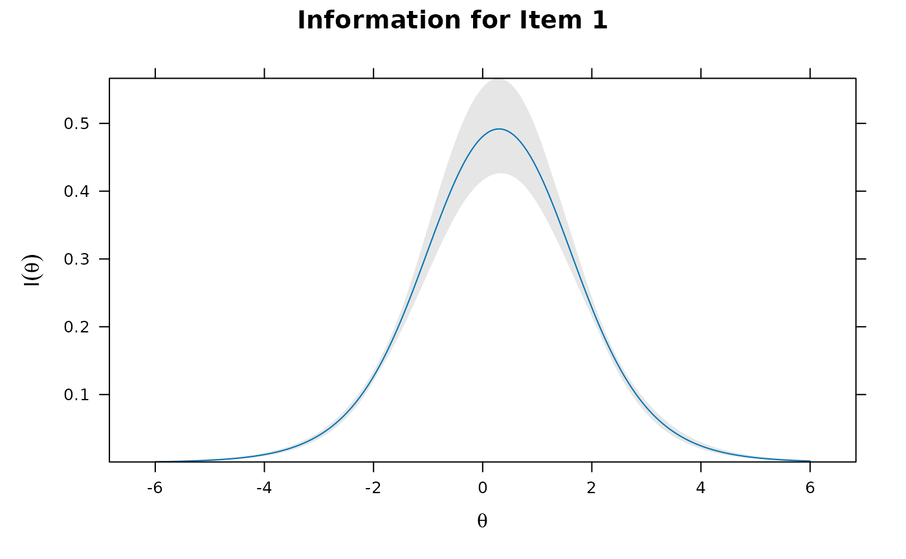

Computes the projective IRT model parameters either using the
logistic kernel approximation approaches (Stucky et al. 2013;
Ip 2010/Doebler and Doebler, 2022) or the MML-PIRT approach by
Chalmers et al. (in review). These return information pertaining to a
lower-dimensional (often unidimensional) IRT model
that has marginalized one or more latent traits.
When the method is the MML-PIRT a working mirt object will be
returned, otherwise if the target is the logistic kernel
approximations then a list
of the PIRT estimates (and potentially their delta-method SEs) are returned.
Usage
pirt(
mod,
model = 1,
project = 1,
itemtype = extract.mirt(mod, "itemtype"),
SE = TRUE,
estimator = "MML",
invariance = "",
IRTpars = FALSE,
shortform = NULL,
...
)Arguments
- mod
fitted model from
mirt- model
type of PIRT model to fit to marginalized table
- project
which dimension to project to in the stored E-table. Default projects all dimensions to the first dimension (
project = 1), as this is the assumed primary dimension in, for instance,bfactor()- itemtype
type of model to fit to the projected marginalized factor. Defaults to the same type as the parent object
mod. Seemirtfor details- SE
logical; compute the ACOV matrix to obtain standard errors (SE)?
- estimator
type of PIRT estimator to use. Default is
'MML'to fit and return the MML-PIRT variable described by Chalmers et al. (in review).'FA'will use Stucky et al.'s (2012) factor analysis logistic approximation to project to the first dimension, and'LKA'will use the use logistic kernel approximation formula presented in Ip (2010)/Doebler and Doebler(2020), however these only project to the first dimension? The latter two estimators are also only applicable when input model is from the M*PL and MGRM family (see for polytomous MGRM derivation), and only return lists of the resulting parameters and SE estimatesNote that for methods other than
'MML'the SEs will be returned only if the parent model as a suitably estimated ACOV matrix to perform the delta method (e.g.,bfactor(..., SE=TRUE)- invariance
type of group invariance to specify (see
multipleGroup). Included here as the multiple-group PIRT approach needs to also calibrate the scale and location of the reference group, which is done silently internally whenever'free_means'or'free_vars'are specified- IRTpars
logical; report classical IRT parameterization and SEs? Only used when
FAapprox = TRUE- shortform
character vector of item names, or numeric vector of item locations, used create a short-form by specifying which items to extract from the PIRT model. For instance, selecting one item from each specific factor has the property of identical marginal and conditional bifactors (see Stucky, Thissen, and Elden, 2013). Only supported when using the MML-PIRT approach as this returns the associated model object
- ...
extra information passed to the estimation engine
Details
Logistic kernel approximation approaches are limited only to the M2PL (and related models, like the M4PL) and MGRM family of ordinal models, while MML-PIRT can be applied to any MIRT model supported by the package.
Standard error are computed when FAapprox = TRUE via the delta method
only when the parent model estimated the ACOV matrix, while the
MML-PIRT approach does not require this prerequisite
as the ACOV can be computed directly. By default,
MML-PIRT computes the associated ACOV matrix using the Oakes'
identity given then marginalized E-table.
References
Chalmers, R. P., Falk, C. F., Reise, S. P. (in review). A General Approach for Estimating Projective IRT Models. Applied Psychological Measurement.
Doebler, A., and Doebler, P. (2022). Rotate and Project: Measurement of the Intended Concept with Unidimensional Item Response Theory. from Multidimensional Ordinal Items. Multivariate Behavioral Research, 57 (1), 40-56.
Ip, H. (2010). Empirically indistinguishable multidimensional IRT and locally dependent unidimensional item response models. British Journal of Mathematical and Statistical Psychology, 63(2),395-416.
Stucky, B. D., Thissen, D., & Orlando E., M. (2012). Using Logistic Approximations of Marginal Trace Lines to Develop Short Assessments. Applied Psychological Measurement, 37(1), 41-57.
Examples
# \donttest{
# Table 3 in Ip (2010)
as <- cbind(rep(c(2.63, 1.63, 1.38), each=5),
c(rep(3.07, 5), numeric(10)),
c(numeric(5), rep(1.36, 5), numeric(5)),
c(numeric(10), rep(.69,5)))
as
#> [,1] [,2] [,3] [,4]
#> [1,] 2.63 3.07 0.00 0.00
#> [2,] 2.63 3.07 0.00 0.00
#> [3,] 2.63 3.07 0.00 0.00
#> [4,] 2.63 3.07 0.00 0.00
#> [5,] 2.63 3.07 0.00 0.00
#> [6,] 1.63 0.00 1.36 0.00
#> [7,] 1.63 0.00 1.36 0.00
#> [8,] 1.63 0.00 1.36 0.00
#> [9,] 1.63 0.00 1.36 0.00
#> [10,] 1.63 0.00 1.36 0.00
#> [11,] 1.38 0.00 0.00 0.69
#> [12,] 1.38 0.00 0.00 0.69
#> [13,] 1.38 0.00 0.00 0.69
#> [14,] 1.38 0.00 0.00 0.69
#> [15,] 1.38 0.00 0.00 0.69
set.seed(8675309)
d <- round(rnorm(15, 0, sd=1.5), 2)
nitems <- length(d)
nfact <- ncol(as)
dat <- simdata(as, d, 10000, itemtype='2PL')
itemstats(dat)
#> $overall
#> N mean_total.score sd_total.score ave.r sd.r alpha SEM.alpha
#> 10000 7.959 3.909 0.262 0.112 0.844 1.546
#>
#> $itemstats
#> N K mean sd total.r total.r_if_rm alpha_if_rm
#> Item_1 10000 2 0.359 0.480 0.636 0.554 0.829
#> Item_2 10000 2 0.585 0.493 0.668 0.588 0.827
#> Item_3 10000 2 0.412 0.492 0.640 0.556 0.829
#> Item_4 10000 2 0.754 0.431 0.591 0.512 0.832
#> Item_5 10000 2 0.636 0.481 0.651 0.571 0.828
#> Item_6 10000 2 0.716 0.451 0.551 0.463 0.835
#> Item_7 10000 2 0.512 0.500 0.575 0.479 0.834
#> Item_8 10000 2 0.639 0.480 0.567 0.475 0.834
#> Item_9 10000 2 0.625 0.484 0.576 0.484 0.833
#> Item_10 10000 2 0.694 0.461 0.555 0.466 0.834
#> Item_11 10000 2 0.156 0.362 0.403 0.321 0.842
#> Item_12 10000 2 0.744 0.437 0.467 0.373 0.840
#> Item_13 10000 2 0.537 0.499 0.517 0.414 0.838
#> Item_14 10000 2 0.325 0.468 0.493 0.395 0.839
#> Item_15 10000 2 0.268 0.443 0.473 0.378 0.839
#>
#> $proportions
#> 0 1
#> Item_1 0.641 0.359
#> Item_2 0.416 0.585
#> Item_3 0.588 0.412
#> Item_4 0.246 0.754
#> Item_5 0.364 0.636
#> Item_6 0.284 0.716
#> Item_7 0.488 0.512
#> Item_8 0.361 0.639
#> Item_9 0.375 0.625
#> Item_10 0.306 0.694
#> Item_11 0.845 0.156
#> Item_12 0.256 0.744
#> Item_13 0.463 0.537
#> Item_14 0.675 0.325
#> Item_15 0.732 0.268
#>
# bifactor model, storing E-table
mod <- bfactor(dat,
"S1 = 1-5
S2 = 6-10
S3 = 11-15")
#>
summary(mod)
#> G S1 S2 S3 h2
#> Item_1 0.635 0.663 0.843
#> Item_2 0.619 0.682 0.849
#> Item_3 0.601 0.690 0.838
#> Item_4 0.591 0.706 0.847
#> Item_5 0.609 0.684 0.839
#> Item_6 0.591 0.528 0.629
#> Item_7 0.582 0.542 0.633
#> Item_8 0.580 0.521 0.608
#> Item_9 0.602 0.511 0.623
#> Item_10 0.594 0.495 0.598
#> Item_11 0.592 0.320 0.453
#> Item_12 0.593 0.309 0.447
#> Item_13 0.597 0.304 0.449
#> Item_14 0.600 0.285 0.441
#> Item_15 0.597 0.337 0.470
#>
#> SS loadings: 5.383 2.347 1.35 0.484
#> Proportion Var: 0.359 0.156 0.09 0.032
#>
#> Factor correlations:
#>
#> G S1 S2 S3
#> G 1
#> S1 0 1
#> S2 0 0 1
#> S3 0 0 0 1
coef(mod, simplify=TRUE)$items
#> a1 a2 a3 a4 d g u
#> Item_1 2.729345 2.846581 0.000000 0.0000000 -1.56858394 0 1
#> Item_2 2.710066 2.985882 0.000000 0.0000000 0.93445084 0 1
#> Item_3 2.538632 2.915514 0.000000 0.0000000 -0.95134299 0 1
#> Item_4 2.568397 3.069943 0.000000 0.0000000 3.00788745 0 1
#> Item_5 2.580091 2.896409 0.000000 0.0000000 1.47560437 0 1
#> Item_6 1.651204 0.000000 1.474984 0.0000000 1.60137755 0 1
#> Item_7 1.635430 0.000000 1.522018 0.0000000 0.07876651 0 1
#> Item_8 1.576305 0.000000 1.415662 0.0000000 0.97158094 0 1
#> Item_9 1.667799 0.000000 1.414830 0.0000000 0.88640083 0 1
#> Item_10 1.594241 0.000000 1.329522 0.0000000 1.36578888 0 1
#> Item_11 1.362801 0.000000 0.000000 0.7364140 -2.35080843 0 1
#> Item_12 1.358706 0.000000 0.000000 0.7069465 1.50011666 0 1
#> Item_13 1.367885 0.000000 0.000000 0.6966279 0.21359522 0 1
#> Item_14 1.364983 0.000000 0.000000 0.6481644 -1.02988427 0 1
#> Item_15 1.396245 0.000000 0.000000 0.7867648 -1.44972019 0 1
# PIRT model via MML-PIRT
pmod <- pirt(mod)
coef(pmod)
#> $Item_1
#> a1 d g u
#> par 1.374 -0.787 0 1
#> CI_2.5 1.295 -0.843 NA NA
#> CI_97.5 1.452 -0.730 NA NA
#>
#> $Item_2
#> a1 d g u
#> par 1.313 0.454 0 1
#> CI_2.5 1.239 0.402 NA NA
#> CI_97.5 1.386 0.507 NA NA
#>
#> $Item_3
#> a1 d g u
#> par 1.244 -0.464 0 1
#> CI_2.5 1.172 -0.516 NA NA
#> CI_97.5 1.315 -0.412 NA NA
#>
#> $Item_4
#> a1 d g u
#> par 1.254 1.446 0 1
#> CI_2.5 1.176 1.380 NA NA
#> CI_97.5 1.333 1.511 NA NA
#>
#> $Item_5
#> a1 d g u
#> par 1.284 0.733 0 1
#> CI_2.5 1.210 0.678 NA NA
#> CI_97.5 1.358 0.788 NA NA
#>
#> $Item_6
#> a1 d g u
#> par 1.240 1.192 0 1
#> CI_2.5 1.161 1.132 NA NA
#> CI_97.5 1.319 1.252 NA NA
#>
#> $Item_7
#> a1 d g u
#> par 1.183 0.059 0 1
#> CI_2.5 1.112 0.010 NA NA
#> CI_97.5 1.255 0.109 NA NA
#>
#> $Item_8
#> a1 d g u
#> par 1.189 0.731 0 1
#> CI_2.5 1.116 0.678 NA NA
#> CI_97.5 1.263 0.784 NA NA
#>
#> $Item_9
#> a1 d g u
#> par 1.259 0.669 0 1
#> CI_2.5 1.182 0.615 NA NA
#> CI_97.5 1.336 0.722 NA NA
#>
#> $Item_10
#> a1 d g u
#> par 1.244 1.059 0 1
#> CI_2.5 1.166 1.001 NA NA
#> CI_97.5 1.323 1.117 NA NA
#>
#> $Item_11
#> a1 d g u
#> par 1.264 -2.158 0 1
#> CI_2.5 1.169 -2.243 NA NA
#> CI_97.5 1.359 -2.073 NA NA
#>
#> $Item_12
#> a1 d g u
#> par 1.248 1.374 0 1
#> CI_2.5 1.165 1.310 NA NA
#> CI_97.5 1.331 1.438 NA NA
#>
#> $Item_13
#> a1 d g u
#> par 1.251 0.194 0 1
#> CI_2.5 1.174 0.144 NA NA
#> CI_97.5 1.327 0.245 NA NA
#>
#> $Item_14
#> a1 d g u
#> par 1.268 -0.955 0 1
#> CI_2.5 1.188 -1.012 NA NA
#> CI_97.5 1.348 -0.898 NA NA
#>
#> $Item_15
#> a1 d g u
#> par 1.263 -1.305 0 1
#> CI_2.5 1.180 -1.368 NA NA
#> CI_97.5 1.346 -1.243 NA NA
#>
#> $GroupPars
#> MEAN_1 COV_11
#> par 0 1
#> CI_2.5 NA NA
#> CI_97.5 NA NA
#>
coef(pmod, printSE=TRUE)
#> $Item_1
#> a1 d logit(g) logit(u)
#> par 1.374 -0.787 -999 999
#> SE 0.040 0.029 NA NA
#>
#> $Item_2
#> a1 d logit(g) logit(u)
#> par 1.313 0.454 -999 999
#> SE 0.038 0.027 NA NA
#>
#> $Item_3
#> a1 d logit(g) logit(u)
#> par 1.244 -0.464 -999 999
#> SE 0.036 0.026 NA NA
#>
#> $Item_4
#> a1 d logit(g) logit(u)
#> par 1.254 1.446 -999 999
#> SE 0.040 0.033 NA NA
#>
#> $Item_5
#> a1 d logit(g) logit(u)
#> par 1.284 0.733 -999 999
#> SE 0.038 0.028 NA NA
#>
#> $Item_6
#> a1 d logit(g) logit(u)
#> par 1.24 1.192 -999 999
#> SE 0.04 0.031 NA NA
#>
#> $Item_7
#> a1 d logit(g) logit(u)
#> par 1.183 0.059 -999 999
#> SE 0.037 0.025 NA NA
#>
#> $Item_8
#> a1 d logit(g) logit(u)
#> par 1.189 0.731 -999 999
#> SE 0.038 0.027 NA NA
#>
#> $Item_9
#> a1 d logit(g) logit(u)
#> par 1.259 0.669 -999 999
#> SE 0.039 0.027 NA NA
#>
#> $Item_10
#> a1 d logit(g) logit(u)
#> par 1.244 1.059 -999 999
#> SE 0.040 0.030 NA NA
#>
#> $Item_11
#> a1 d logit(g) logit(u)
#> par 1.264 -2.158 -999 999
#> SE 0.048 0.043 NA NA
#>
#> $Item_12
#> a1 d logit(g) logit(u)
#> par 1.248 1.374 -999 999
#> SE 0.042 0.033 NA NA
#>
#> $Item_13
#> a1 d logit(g) logit(u)
#> par 1.251 0.194 -999 999
#> SE 0.039 0.026 NA NA
#>
#> $Item_14
#> a1 d logit(g) logit(u)
#> par 1.268 -0.955 -999 999
#> SE 0.041 0.029 NA NA
#>
#> $Item_15
#> a1 d logit(g) logit(u)
#> par 1.263 -1.305 -999 999
#> SE 0.042 0.032 NA NA
#>
#> $GroupPars
#> MEAN_1 COV_11
#> par 0 1
#> SE NA NA
#>
coef(pmod, simplify=TRUE)$items
#> a1 d g u
#> Item_1 1.373519 -0.78655364 0 1
#> Item_2 1.312659 0.45427232 0 1
#> Item_3 1.243922 -0.46406658 0 1
#> Item_4 1.254440 1.44551968 0 1
#> Item_5 1.284237 0.73293494 0 1
#> Item_6 1.240230 1.19182065 0 1
#> Item_7 1.183431 0.05931382 0 1
#> Item_8 1.189413 0.73136375 0 1
#> Item_9 1.258892 0.66864188 0 1
#> Item_10 1.244321 1.05930025 0 1
#> Item_11 1.264220 -2.15792690 0 1
#> Item_12 1.248219 1.37388261 0 1
#> Item_13 1.250500 0.19422196 0 1
#> Item_14 1.267997 -0.95508217 0 1
#> Item_15 1.262993 -1.30545672 0 1
# Logistic approximations (parameters only)
pirt(mod, estimator = 'FA')
#> a d
#> Item_1 1.400635 -0.80496017
#> Item_2 1.342061 0.46275254
#> Item_3 1.279863 -0.47962401
#> Item_4 1.245353 1.45845135
#> Item_5 1.307148 0.74758351
#> Item_6 1.247827 1.21017266
#> Item_7 1.219083 0.05871418
#> Item_8 1.211885 0.74696533
#> Item_9 1.282536 0.68164148
#> Item_10 1.256360 1.07632564
#> Item_11 1.250746 -2.15751484
#> Item_12 1.254771 1.38536380
#> Item_13 1.265950 0.19767795
#> Item_14 1.275614 -0.96245496
#> Item_15 1.267386 -1.31592604
pirt(mod, estimator = 'LKA') # effectively the same
#> a d
#> Item_1 1.399687 -0.8044154
#> Item_2 1.341130 0.4624317
#> Item_3 1.278986 -0.4792954
#> Item_4 1.244478 1.4574265
#> Item_5 1.306256 0.7470730
#> Item_6 1.247335 1.2096956
#> Item_7 1.218585 0.0586902
#> Item_8 1.211430 0.7466846
#> Item_9 1.282054 0.6813855
#> Item_10 1.255922 1.0759507
#> Item_11 1.250565 -2.1572020
#> Item_12 1.254601 1.3851764
#> Item_13 1.265783 0.1976519
#> Item_14 1.275466 -0.9623429
#> Item_15 1.267181 -1.3157130
# plots
plot(pmod)

plot(pmod, type = 'info')

plot(pmod, type = 'itemscore')

plot(pmod, type = 'infotrace')

itemplot(pmod, 1, type = 'info', CE=TRUE)

# standardized loadings
summary(pmod)
#> F1 h2
#> Item_1 0.628 0.394
#> Item_2 0.611 0.373
#> Item_3 0.590 0.348
#> Item_4 0.593 0.352
#> Item_5 0.602 0.363
#> Item_6 0.589 0.347
#> Item_7 0.571 0.326
#> Item_8 0.573 0.328
#> Item_9 0.595 0.354
#> Item_10 0.590 0.348
#> Item_11 0.596 0.356
#> Item_12 0.591 0.350
#> Item_13 0.592 0.351
#> Item_14 0.597 0.357
#> Item_15 0.596 0.355
#>
#> SE.F1
#> Item_1 0.011
#> Item_2 0.011
#> Item_3 0.011
#> Item_4 0.012
#> Item_5 0.011
#> Item_6 0.013
#> Item_7 0.012
#> Item_8 0.012
#> Item_9 0.012
#> Item_10 0.012
#> Item_11 0.015
#> Item_12 0.013
#> Item_13 0.012
#> Item_14 0.012
#> Item_15 0.013
#>
#> SS loadings: 5.301
#> Proportion Var: 0.353
#>
#> Factor correlations:
#>
#> F1
#> F1 1
# factor scores (EAP). Not optimal as the estimates/SEs ignore
# the marginal components
fscores(pmod, method = 'EAPsum', full.scores=FALSE) # EAPs for sum-scores
#> Sum.Scores F1 SE_F1 observed expected std.res
#> 0 0 -2.155 0.579 224 110.798 10.754
#> 1 1 -1.777 0.524 371 250.594 7.606
#> 2 2 -1.460 0.486 464 390.758 3.705
#> 3 3 -1.181 0.460 513 522.965 0.436
#> 4 4 -0.928 0.442 631 644.107 0.516
#> 5 5 -0.691 0.430 673 751.734 2.872
#> 6 6 -0.463 0.424 763 842.665 2.744
#> 7 7 -0.239 0.422 802 912.566 3.660
#> 8 8 -0.015 0.423 839 955.939 3.782
#> 9 9 0.213 0.429 848 966.487 3.811
#> 10 10 0.450 0.439 839 937.861 3.228
#> 11 11 0.701 0.453 817 864.747 1.624
#> 12 12 0.972 0.474 844 744.094 3.662
#> 13 13 1.273 0.503 631 576.753 2.259
#> 14 14 1.618 0.543 493 371.556 6.300
#> 15 15 2.028 0.599 248 156.375 7.327
# EAPs using Lord-Wingersky 2.0 approach (recommended if using sum-scores)
fscores(mod, method = 'EAPsum_2.0', full.scores=FALSE)
#> Sum.Scores G SE_G observed expected std.res
#> 0 0 -1.836 0.660 224 224.130 0.009
#> 1 1 -1.448 0.612 371 364.156 0.359
#> 2 2 -1.168 0.590 464 454.392 0.451
#> 3 3 -0.947 0.579 513 531.754 0.813
#> 4 4 -0.755 0.572 631 611.052 0.807
#> 5 5 -0.572 0.566 673 697.142 0.914
#> 6 6 -0.384 0.562 763 769.989 0.252
#> 7 7 -0.198 0.561 802 812.369 0.364
#> 8 8 -0.020 0.563 839 829.863 0.317
#> 9 9 0.153 0.564 848 837.241 0.372
#> 10 10 0.333 0.564 839 840.995 0.069
#> 11 11 0.536 0.563 817 835.036 0.624
#> 12 12 0.777 0.568 844 788.911 1.961
#> 13 13 1.061 0.581 631 668.226 1.440
#> 14 14 1.395 0.608 493 484.779 0.373
#> 15 15 1.808 0.657 248 249.963 0.124
# EAP scores from full response data (not generally recommended)
fscores(pmod, full.scores=FALSE) |> head()
#> Item_1 Item_2 Item_3 Item_4 Item_5 Item_6 Item_7 Item_8 Item_9 Item_10
#> [1,] 0 0 0 0 0 0 0 0 0 0
#> [2,] 0 0 0 0 0 0 0 0 0 0
#> [3,] 0 0 0 0 0 0 0 0 0 0
#> [4,] 0 0 0 0 0 0 0 0 0 0
#> [5,] 0 0 0 0 0 0 0 0 0 0
#> [6,] 0 0 0 0 0 0 0 0 0 0
#> Item_11 Item_12 Item_13 Item_14 Item_15 F1 SE_F1
#> [1,] 0 0 0 0 0 -2.155349 0.5791122
#> [2,] 0 0 0 0 1 -1.773311 0.5236924
#> [3,] 0 0 0 1 0 -1.771939 0.5235101
#> [4,] 0 0 0 1 1 -1.452115 0.4850379
#> [5,] 0 0 1 0 0 -1.776740 0.5241486
#> [6,] 0 0 1 1 0 -1.455056 0.4853529
fs <- fscores(pmod)
# compare to bifactor scores (marginal vs conditional)
bfs <- fscores(mod, method = 'MAP')
cor(bfs[,1], fs)
#> F1
#> [1,] 0.9809416
# item fit (silly, but possible)
itemfit(pmod)
#> item S_X2 df.S_X2 RMSEA.S_X2 p.S_X2
#> 1 Item_1 135.666 12 0.032 0.000
#> 2 Item_2 199.080 12 0.039 0.000
#> 3 Item_3 159.266 12 0.035 0.000
#> 4 Item_4 142.685 12 0.033 0.000
#> 5 Item_5 194.665 12 0.039 0.000
#> 6 Item_6 28.972 12 0.012 0.004
#> 7 Item_7 61.784 12 0.020 0.000
#> 8 Item_8 13.686 12 0.004 0.321
#> 9 Item_9 13.892 12 0.004 0.308
#> 10 Item_10 22.361 12 0.009 0.034
#> 11 Item_11 83.005 12 0.024 0.000
#> 12 Item_12 202.623 12 0.040 0.000
#> 13 Item_13 163.266 12 0.036 0.000
#> 14 Item_14 139.242 12 0.033 0.000
#> 15 Item_15 108.976 12 0.028 0.000
# three item shortform by taking the highest PIRT discrimination/slope terms
# per specific factor to ensure that the marginal and joint likelihood
# functions are comparable (see Stucky et al. 2013 for details)
slopes <- coef(pmod, simplify=TRUE)$items[,'a1']
slopes
#> Item_1 Item_2 Item_3 Item_4 Item_5 Item_6 Item_7 Item_8
#> 1.373519 1.312659 1.243922 1.254440 1.284237 1.240230 1.183431 1.189413
#> Item_9 Item_10 Item_11 Item_12 Item_13 Item_14 Item_15
#> 1.258892 1.244321 1.264220 1.248219 1.250500 1.267997 1.262993
namemax <- \(slp) names(slp)[which.max(slp)]
shortform <- c(namemax(slopes[1:5]),
namemax(slopes[6:10]), namemax(slopes[11:15]))
pirt_short <- pirt(mod, shortform=shortform)
coef(pirt_short, simplify=TRUE)$items
#> a1 d g u
#> Item_1 1.373519 -0.7865537 0 1
#> Item_9 1.258891 0.6686416 0 1
#> Item_14 1.267997 -0.9550822 0 1
# EAP-sum for short form
fscores(pirt_short, method='EAPsum', full.scores=FALSE)
#> Sum.Scores F1 SE_F1 observed expected std.res
#> 0 0 -0.903 0.769 2440 2460.334 0.410
#> 1 1 -0.198 0.722 3491 3430.762 1.028
#> 2 2 0.468 0.710 2609 2668.943 1.160
#> 3 3 1.148 0.738 1460 1439.961 0.528
###########################
# same example, but with polytomous data
# Table 3 in Ip (2010)
as <- cbind(rep(c(2.63, 1.63, 1.38), each=5),
c(rep(3.07, 5), numeric(10)),
c(numeric(5), rep(1.36, 5), numeric(5)),
c(numeric(10), rep(.69,5)))
as
#> [,1] [,2] [,3] [,4]
#> [1,] 2.63 3.07 0.00 0.00
#> [2,] 2.63 3.07 0.00 0.00
#> [3,] 2.63 3.07 0.00 0.00
#> [4,] 2.63 3.07 0.00 0.00
#> [5,] 2.63 3.07 0.00 0.00
#> [6,] 1.63 0.00 1.36 0.00
#> [7,] 1.63 0.00 1.36 0.00
#> [8,] 1.63 0.00 1.36 0.00
#> [9,] 1.63 0.00 1.36 0.00
#> [10,] 1.63 0.00 1.36 0.00
#> [11,] 1.38 0.00 0.00 0.69
#> [12,] 1.38 0.00 0.00 0.69
#> [13,] 1.38 0.00 0.00 0.69
#> [14,] 1.38 0.00 0.00 0.69
#> [15,] 1.38 0.00 0.00 0.69
set.seed(8675309)
diffs <- t(apply(matrix(runif(20*4, .5, 1), 20), 1, cumsum))
diffs <- -(diffs - rowMeans(diffs))
d <- diffs + rnorm(20)
nitems <- nrow(d)
nfact <- ncol(as)
dat <- simdata(as, d, 10000, itemtype='graded')
itemstats(dat)
#> $overall
#> N mean_total.score sd_total.score ave.r sd.r alpha SEM.alpha
#> 10000 26.966 15.804 0.347 0.136 0.89 5.238
#>
#> $itemstats
#> N K mean sd total.r total.r_if_rm alpha_if_rm
#> Item_1 10000 5 1.748 1.799 0.720 0.658 0.879
#> Item_2 10000 5 1.958 1.797 0.731 0.671 0.878
#> Item_3 10000 5 1.985 1.796 0.730 0.669 0.878
#> Item_4 10000 5 2.232 1.790 0.727 0.667 0.878
#> Item_5 10000 5 1.876 1.810 0.728 0.667 0.878
#> Item_6 10000 5 1.943 1.712 0.609 0.533 0.884
#> Item_7 10000 5 1.534 1.679 0.604 0.530 0.884
#> Item_8 10000 5 0.977 1.494 0.557 0.487 0.886
#> Item_9 10000 5 2.140 1.759 0.610 0.533 0.884
#> Item_10 10000 5 2.030 1.699 0.617 0.543 0.884
#> Item_11 10000 5 2.068 1.607 0.568 0.493 0.886
#> Item_12 10000 5 2.067 1.623 0.549 0.471 0.887
#> Item_13 10000 5 1.475 1.581 0.555 0.480 0.886
#> Item_14 10000 5 0.780 1.281 0.496 0.431 0.888
#> Item_15 10000 5 2.155 1.665 0.564 0.485 0.886
#>
#> $proportions
#> 0 1 2 3 4
#> Item_1 0.467 0.046 0.087 0.072 0.328
#> Item_2 0.389 0.085 0.086 0.057 0.382
#> Item_3 0.386 0.085 0.067 0.084 0.379
#> Item_4 0.338 0.056 0.083 0.081 0.442
#> Item_5 0.426 0.071 0.062 0.084 0.358
#> Item_6 0.350 0.126 0.074 0.131 0.319
#> Item_7 0.476 0.090 0.094 0.105 0.235
#> Item_8 0.649 0.071 0.066 0.082 0.132
#> Item_9 0.336 0.079 0.095 0.091 0.400
#> Item_10 0.314 0.128 0.131 0.069 0.358
#> Item_11 0.264 0.151 0.156 0.112 0.317
#> Item_12 0.277 0.145 0.123 0.144 0.311
#> Item_13 0.447 0.117 0.139 0.106 0.190
#> Item_14 0.662 0.114 0.082 0.068 0.075
#> Item_15 0.291 0.092 0.143 0.119 0.355
#>
# bifactor model, storing E-table
mod <- bfactor(dat,
"S1 = 1-5
S2 = 6-10
S3 = 11-15")
#>
summary(mod)
#> G S1 S2 S3 h2
#> Item_1 0.613 0.681 0.840
#> Item_2 0.625 0.673 0.843
#> Item_3 0.623 0.672 0.839
#> Item_4 0.628 0.675 0.851
#> Item_5 0.623 0.677 0.847
#> Item_6 0.582 0.524 0.613
#> Item_7 0.589 0.507 0.604
#> Item_8 0.604 0.496 0.610
#> Item_9 0.601 0.516 0.628
#> Item_10 0.598 0.495 0.603
#> Item_11 0.600 0.310 0.456
#> Item_12 0.577 0.303 0.424
#> Item_13 0.597 0.303 0.448
#> Item_14 0.604 0.321 0.468
#> Item_15 0.602 0.353 0.487
#>
#> SS loadings: 5.481 2.283 1.29 0.508
#> Proportion Var: 0.365 0.152 0.086 0.034
#>
#> Factor correlations:
#>
#> G S1 S2 S3
#> G 1
#> S1 0 1
#> S2 0 0 1
#> S3 0 0 0 1
coef(mod, simplify=TRUE)$items
#> a1 a2 a3 a4 d1 d2 d3
#> Item_1 2.606454 2.896438 0.000000 0.0000000 0.3461174 -0.15193526 -1.09939280
#> Item_2 2.679074 2.884705 0.000000 0.0000000 1.2142272 0.27096472 -0.66839388
#> Item_3 2.639394 2.847964 0.000000 0.0000000 1.2354367 0.31644095 -0.40349378
#> Item_4 2.770114 2.977204 0.000000 0.0000000 1.8437257 1.18983324 0.25081566
#> Item_5 2.707559 2.945173 0.000000 0.0000000 0.8094373 0.02327422 -0.65593596
#> Item_6 1.591727 0.000000 1.434926 0.0000000 1.0522630 0.15634774 -0.35127897
#> Item_7 1.594155 0.000000 1.372718 0.0000000 0.1607232 -0.45237873 -1.12284459
#> Item_8 1.645872 0.000000 1.351244 0.0000000 -1.0559655 -1.60557387 -2.17629976
#> Item_9 1.678862 0.000000 1.440895 0.0000000 1.1815376 0.59642170 -0.07435316
#> Item_10 1.616393 0.000000 1.337546 0.0000000 1.3114363 0.38456142 -0.51012581
#> Item_11 1.383423 0.000000 0.000000 0.7152789 1.4594442 0.49614358 -0.41448961
#> Item_12 1.293694 0.000000 0.000000 0.6791538 1.3247558 0.43511389 -0.25896790
#> Item_13 1.368099 0.000000 0.000000 0.6951099 0.3029424 -0.37313529 -1.23470230
#> Item_14 1.409718 0.000000 0.000000 0.7491920 -0.9814945 -1.78271060 -2.52752766
#> Item_15 1.429251 0.000000 0.000000 0.8392255 1.3096690 0.71145845 -0.15133731
#> d4
#> Item_1 -1.9193970
#> Item_2 -1.2971923
#> Item_3 -1.3225427
#> Item_4 -0.6521361
#> Item_5 -1.6050655
#> Item_6 -1.2991596
#> Item_7 -1.9743704
#> Item_8 -3.0765351
#> Item_9 -0.7177150
#> Item_10 -0.9960016
#> Item_11 -1.1000675
#> Item_12 -1.1089834
#> Item_13 -2.0281101
#> Item_14 -3.4408504
#> Item_15 -0.8799403
# PIRT model via MML-PIRT
pmod <- pirt(mod)
coef(pmod)
#> $Item_1
#> a1 d1 d2 d3 d4
#> par 1.280 0.173 -0.070 -0.534 -0.941
#> CI_2.5 1.218 0.122 -0.121 -0.587 -0.997
#> CI_97.5 1.342 0.224 -0.019 -0.482 -0.885
#>
#> $Item_2
#> a1 d1 d2 d3 d4
#> par 1.315 0.600 0.136 -0.327 -0.639
#> CI_2.5 1.253 0.547 0.085 -0.379 -0.693
#> CI_97.5 1.377 0.653 0.187 -0.275 -0.585
#>
#> $Item_3
#> a1 d1 d2 d3 d4
#> par 1.304 0.619 0.160 -0.199 -0.656
#> CI_2.5 1.243 0.566 0.109 -0.250 -0.710
#> CI_97.5 1.365 0.671 0.211 -0.147 -0.602
#>
#> $Item_4
#> a1 d1 d2 d3 d4
#> par 1.335 0.891 0.572 0.117 -0.318
#> CI_2.5 1.272 0.836 0.519 0.065 -0.370
#> CI_97.5 1.398 0.946 0.625 0.168 -0.265
#>
#> $Item_5
#> a1 d1 d2 d3 d4
#> par 1.309 0.398 0.017 -0.313 -0.776
#> CI_2.5 1.247 0.346 -0.035 -0.364 -0.831
#> CI_97.5 1.371 0.449 0.068 -0.261 -0.721
#>
#> $Item_6
#> a1 d1 d2 d3 d4
#> par 1.182 0.786 0.119 -0.258 -0.965
#> CI_2.5 1.119 0.735 0.070 -0.307 -1.018
#> CI_97.5 1.244 0.838 0.168 -0.208 -0.912
#>
#> $Item_7
#> a1 d1 d2 d3 d4
#> par 1.208 0.128 -0.337 -0.845 -1.498
#> CI_2.5 1.143 0.078 -0.387 -0.898 -1.557
#> CI_97.5 1.272 0.177 -0.287 -0.792 -1.438
#>
#> $Item_8
#> a1 d1 d2 d3 d4
#> par 1.273 -0.809 -1.235 -1.679 -2.388
#> CI_2.5 1.200 -0.864 -1.294 -1.744 -2.465
#> CI_97.5 1.346 -0.755 -1.176 -1.615 -2.311
#>
#> $Item_9
#> a1 d1 d2 d3 d4
#> par 1.243 0.879 0.444 -0.053 -0.531
#> CI_2.5 1.177 0.826 0.393 -0.103 -0.582
#> CI_97.5 1.309 0.933 0.495 -0.003 -0.480
#>
#> $Item_10
#> a1 d1 d2 d3 d4
#> par 1.236 1.008 0.298 -0.389 -0.763
#> CI_2.5 1.172 0.953 0.247 -0.439 -0.816
#> CI_97.5 1.300 1.062 0.348 -0.338 -0.711
#>
#> $Item_11
#> a1 d1 d2 d3 d4
#> par 1.260 1.331 0.451 -0.378 -1.002
#> CI_2.5 1.196 1.273 0.400 -0.428 -1.057
#> CI_97.5 1.323 1.388 0.501 -0.327 -0.948
#>
#> $Item_12
#> a1 d1 d2 d3 d4
#> par 1.186 1.216 0.398 -0.238 -1.018
#> CI_2.5 1.124 1.160 0.348 -0.287 -1.071
#> CI_97.5 1.247 1.271 0.447 -0.189 -0.965
#>
#> $Item_13
#> a1 d1 d2 d3 d4
#> par 1.254 0.277 -0.339 -1.126 -1.857
#> CI_2.5 1.189 0.227 -0.390 -1.181 -1.922
#> CI_97.5 1.319 0.328 -0.289 -1.070 -1.792
#>
#> $Item_14
#> a1 d1 d2 d3 d4
#> par 1.289 -0.887 -1.614 -2.296 -3.145
#> CI_2.5 1.216 -0.943 -1.678 -2.372 -3.240
#> CI_97.5 1.362 -0.831 -1.550 -2.221 -3.049
#>
#> $Item_15
#> a1 d1 d2 d3 d4
#> par 1.261 1.157 0.626 -0.136 -0.778
#> CI_2.5 1.196 1.101 0.574 -0.186 -0.831
#> CI_97.5 1.326 1.213 0.677 -0.086 -0.726
#>
#> $GroupPars
#> MEAN_1 COV_11
#> par 0 1
#> CI_2.5 NA NA
#> CI_97.5 NA NA
#>
coef(pmod, printSE=TRUE)
#> $Item_1
#> a1 d1 d2 d3 d4
#> par 1.280 0.173 -0.070 -0.534 -0.941
#> SE 0.031 0.026 0.026 0.027 0.028
#>
#> $Item_2
#> a1 d1 d2 d3 d4
#> par 1.315 0.600 0.136 -0.327 -0.639
#> SE 0.032 0.027 0.026 0.027 0.027
#>
#> $Item_3
#> a1 d1 d2 d3 d4
#> par 1.304 0.619 0.160 -0.199 -0.656
#> SE 0.031 0.027 0.026 0.026 0.027
#>
#> $Item_4
#> a1 d1 d2 d3 d4
#> par 1.335 0.891 0.572 0.117 -0.318
#> SE 0.032 0.028 0.027 0.026 0.027
#>
#> $Item_5
#> a1 d1 d2 d3 d4
#> par 1.309 0.398 0.017 -0.313 -0.776
#> SE 0.032 0.026 0.026 0.026 0.028
#>
#> $Item_6
#> a1 d1 d2 d3 d4
#> par 1.182 0.786 0.119 -0.258 -0.965
#> SE 0.032 0.026 0.025 0.025 0.027
#>
#> $Item_7
#> a1 d1 d2 d3 d4
#> par 1.208 0.128 -0.337 -0.845 -1.498
#> SE 0.033 0.025 0.026 0.027 0.030
#>
#> $Item_8
#> a1 d1 d2 d3 d4
#> par 1.273 -0.809 -1.235 -1.679 -2.388
#> SE 0.037 0.028 0.030 0.033 0.039
#>
#> $Item_9
#> a1 d1 d2 d3 d4
#> par 1.243 0.879 0.444 -0.053 -0.531
#> SE 0.034 0.027 0.026 0.025 0.026
#>
#> $Item_10
#> a1 d1 d2 d3 d4
#> par 1.236 1.008 0.298 -0.389 -0.763
#> SE 0.033 0.028 0.026 0.026 0.027
#>
#> $Item_11
#> a1 d1 d2 d3 d4
#> par 1.260 1.331 0.451 -0.378 -1.002
#> SE 0.033 0.029 0.026 0.026 0.028
#>
#> $Item_12
#> a1 d1 d2 d3 d4
#> par 1.186 1.216 0.398 -0.238 -1.018
#> SE 0.031 0.028 0.025 0.025 0.027
#>
#> $Item_13
#> a1 d1 d2 d3 d4
#> par 1.254 0.277 -0.339 -1.126 -1.857
#> SE 0.033 0.026 0.026 0.028 0.033
#>
#> $Item_14
#> a1 d1 d2 d3 d4
#> par 1.289 -0.887 -1.614 -2.296 -3.145
#> SE 0.037 0.029 0.033 0.039 0.049
#>
#> $Item_15
#> a1 d1 d2 d3 d4
#> par 1.261 1.157 0.626 -0.136 -0.778
#> SE 0.033 0.029 0.026 0.025 0.027
#>
#> $GroupPars
#> MEAN_1 COV_11
#> par 0 1
#> SE NA NA
#>
coef(pmod, simplify=TRUE)$items
#> a1 d1 d2 d3 d4
#> Item_1 1.280008 0.1732170 -0.07002767 -0.53417980 -0.9409135
#> Item_2 1.315191 0.5998649 0.13587842 -0.32671495 -0.6391106
#> Item_3 1.303869 0.6185420 0.15973877 -0.19881025 -0.6559757
#> Item_4 1.335326 0.8908705 0.57185737 0.11680519 -0.3175738
#> Item_5 1.308973 0.3976045 0.01652285 -0.31250812 -0.7761254
#> Item_6 1.181507 0.7863039 0.11927966 -0.25766748 -0.9651147
#> Item_7 1.207576 0.1278581 -0.33703930 -0.84513156 -1.4977836
#> Item_8 1.273044 -0.8094754 -1.23520319 -1.67926675 -2.3882348
#> Item_9 1.243136 0.8794215 0.44426741 -0.05298856 -0.5311225
#> Item_10 1.236073 1.0076403 0.29762851 -0.38882875 -0.7632976
#> Item_11 1.259522 1.3305386 0.45062206 -0.37786140 -1.0024057
#> Item_12 1.185618 1.2155620 0.39767975 -0.23771001 -1.0178430
#> Item_13 1.253923 0.2774169 -0.33920361 -1.12554158 -1.8571556
#> Item_14 1.288643 -0.8867206 -1.61378184 -2.29629710 -3.1447259
#> Item_15 1.261319 1.1567007 0.62571208 -0.13584032 -0.7784188
# Logistic approximations (parameters only)
pirt(mod, estimator = 'FA')
#> a d1 d2 d3 d4
#> Item_1 1.320494 0.1753517 -0.07697418 -0.5569797 -0.9724142
#> Item_2 1.361383 0.6170146 0.13769186 -0.3396471 -0.6591737
#> Item_3 1.353990 0.6337700 0.16233190 -0.2069894 -0.6784548
#> Item_4 1.374812 0.9150442 0.59051623 0.1244802 -0.3236562
#> Item_5 1.354736 0.4050048 0.01164534 -0.3281998 -0.8031001
#> Item_6 1.216944 0.8045005 0.11953459 -0.2685679 -0.9932636
#> Item_7 1.240862 0.1251041 -0.35212357 -0.8740023 -1.5368148
#> Item_8 1.289028 -0.8270196 -1.25746629 -1.7044520 -2.4095056
#> Item_9 1.281345 0.9017759 0.45520238 -0.0567480 -0.5477761
#> Item_10 1.270905 1.0311299 0.30236525 -0.4010915 -0.7831162
#> Item_11 1.275374 1.3454575 0.45739338 -0.3821168 -1.0141492
#> Item_12 1.201565 1.2304149 0.40412775 -0.2405258 -1.0300085
#> Item_13 1.266543 0.2804545 -0.34543688 -1.1430484 -1.8775603
#> Item_14 1.290249 -0.8983159 -1.63163153 -2.3133277 -3.1492493
#> Item_15 1.281888 1.1746360 0.63810375 -0.1357337 -0.7892144
pirt(mod, estimator = 'LKA') # see Doebler and Doebler (2020)
#> a d1 d2 d3 d4
#> Item_1 1.319593 0.1752319 -0.07692161 -0.55659934 -0.9717502
#> Item_2 1.360455 0.6165942 0.13759802 -0.33941569 -0.6587245
#> Item_3 1.353073 0.6333410 0.16222201 -0.20684926 -0.6779955
#> Item_4 1.373860 0.9144106 0.59010735 0.12439404 -0.3234321
#> Item_5 1.353803 0.4047258 0.01163732 -0.32797381 -0.8025470
#> Item_6 1.216479 0.8041932 0.11948894 -0.26846536 -0.9928842
#> Item_7 1.240413 0.1250588 -0.35199601 -0.87368569 -1.5362581
#> Item_8 1.288570 -0.8267257 -1.25701943 -1.70384629 -2.4086493
#> Item_9 1.280853 0.9014299 0.45502770 -0.05672622 -0.5475659
#> Item_10 1.270459 1.0307680 0.30225914 -0.40095074 -0.7828414
#> Item_11 1.275198 1.3452718 0.45733025 -0.38206408 -1.0140092
#> Item_12 1.201413 1.2302595 0.40407671 -0.24049542 -1.0298784
#> Item_13 1.266377 0.2804177 -0.34539147 -1.14289819 -1.8773135
#> Item_14 1.290056 -0.8981819 -1.63138803 -2.31298248 -3.1487793
#> Item_15 1.281658 1.1744248 0.63798901 -0.13570932 -0.7890725
# plots
plot(pmod)

plot(pmod, type = 'info')

plot(pmod, type = 'trace')

plot(pmod, type = 'infotrace')

itemplot(pmod, 1, type = 'info', CE=TRUE)

# standardized loadings
summary(pmod)
#> F1 h2
#> Item_1 0.601 0.361
#> Item_2 0.611 0.374
#> Item_3 0.608 0.370
#> Item_4 0.617 0.381
#> Item_5 0.610 0.372
#> Item_6 0.570 0.325
#> Item_7 0.579 0.335
#> Item_8 0.599 0.359
#> Item_9 0.590 0.348
#> Item_10 0.588 0.345
#> Item_11 0.595 0.354
#> Item_12 0.572 0.327
#> Item_13 0.593 0.352
#> Item_14 0.604 0.364
#> Item_15 0.595 0.355
#>
#> SE.F1
#> Item_1 0.0094
#> Item_2 0.0092
#> Item_3 0.0092
#> Item_4 0.0092
#> Item_5 0.0093
#> Item_6 0.0104
#> Item_7 0.0105
#> Item_8 0.0112
#> Item_9 0.0105
#> Item_10 0.0102
#> Item_11 0.0099
#> Item_12 0.0102
#> Item_13 0.0102
#> Item_14 0.0111
#> Item_15 0.0101
#>
#> SS loadings: 5.321
#> Proportion Var: 0.355
#>
#> Factor correlations:
#>
#> F1
#> F1 1
# factor scores (EAP)
fscores(pmod, method = 'EAPsum', full.scores=FALSE) # EAPs for sum-scores
#> Sum.Scores F1 SE_F1 observed expected std.res
#> 0 0 -2.246 0.565 185 85.867 10.698
#> 1 1 -1.925 0.506 128 73.812 6.307
#> 2 2 -1.787 0.499 139 86.346 5.666
#> 3 3 -1.672 0.492 127 97.555 2.981
#> 4 4 -1.621 0.502 165 133.724 2.705
#> 5 5 -1.472 0.465 208 137.708 5.990
#> 6 6 -1.374 0.455 177 149.106 2.284
#> 7 7 -1.283 0.447 182 159.149 1.811
#> 8 8 -1.208 0.444 183 174.476 0.645
#> 9 9 -1.115 0.429 180 180.981 0.073
#> 10 10 -1.036 0.421 202 188.865 0.956
#> 11 11 -0.960 0.415 179 195.757 1.198
#> 12 12 -0.889 0.409 201 203.447 0.172
#> 13 13 -0.816 0.402 198 208.350 0.717
#> 14 14 -0.747 0.397 207 213.219 0.426
#> 15 15 -0.681 0.392 181 217.384 2.468
#> 16 16 -0.616 0.388 189 221.415 2.178
#> 17 17 -0.553 0.384 201 224.261 1.553
#> 18 18 -0.490 0.380 199 226.804 1.846
#> 19 19 -0.430 0.377 193 228.818 2.368
#> 20 20 -0.370 0.374 197 230.532 2.208
#> 21 21 -0.311 0.372 217 231.556 0.957
#> 22 22 -0.253 0.369 218 232.253 0.935
#> 23 23 -0.196 0.368 221 232.524 0.756
#> 24 24 -0.139 0.366 195 232.483 2.458
#> 25 25 -0.082 0.365 201 231.935 2.031
#> 26 26 -0.026 0.363 192 231.079 2.571
#> 27 27 0.029 0.363 185 229.853 2.958
#> 28 28 0.085 0.362 201 228.329 1.809
#> 29 29 0.140 0.362 186 226.368 2.683
#> 30 30 0.195 0.362 224 224.121 0.008
#> 31 31 0.250 0.362 181 221.528 2.723
#> 32 32 0.306 0.362 163 218.650 3.763
#> 33 33 0.361 0.363 196 215.347 1.318
#> 34 34 0.417 0.363 176 211.776 2.458
#> 35 35 0.474 0.364 177 207.866 2.141
#> 36 36 0.530 0.366 183 203.678 1.449
#> 37 37 0.587 0.367 183 199.032 1.136
#> 38 38 0.645 0.369 176 194.144 1.302
#> 39 39 0.704 0.371 186 188.909 0.212
#> 40 40 0.764 0.374 148 183.413 2.615
#> 41 41 0.824 0.376 161 177.354 1.228
#> 42 42 0.885 0.379 161 171.126 0.774
#> 43 43 0.948 0.383 165 164.541 0.036
#> 44 44 1.013 0.387 172 157.744 1.135
#> 45 45 1.078 0.390 153 150.133 0.234
#> 46 46 1.145 0.395 138 142.574 0.383
#> 47 47 1.215 0.400 164 134.669 2.527
#> 48 48 1.288 0.406 146 126.696 1.715
#> 49 49 1.360 0.411 149 117.272 2.930
#> 50 50 1.436 0.417 149 108.571 3.880
#> 51 51 1.516 0.424 126 99.620 2.643
#> 52 52 1.606 0.436 122 90.976 3.253
#> 53 53 1.684 0.440 101 79.164 2.454
#> 54 54 1.775 0.448 99 70.100 3.452
#> 55 55 1.876 0.458 78 61.078 2.165
#> 56 56 2.006 0.485 79 53.241 3.530
#> 57 57 2.073 0.478 66 37.663 4.617
#> 58 58 2.193 0.486 58 30.650 4.940
#> 59 59 2.344 0.498 41 24.127 3.435
#> 60 60 2.632 0.549 42 20.281 4.823
# EAP scores from full response data
fs <- fscores(pmod)
# compare to bifactor scores (marginal vs conditional)
bfs <- fscores(mod, method = 'MAP')
cor(bfs[,1], fs)
#> F1
#> [1,] 0.978883
###########################
# Two tier example projected to simple structure
# simulate data
set.seed(1234)
a <- matrix(c(
0,1,0.5,NA,NA,
0,1,0.5,NA,NA,
0,1,0.5,NA,NA,
0,1,0.5,NA,NA,
0,1,0.5,NA,NA,
0,1,NA,0.5,NA,
0,1,NA,0.5,NA,
0,1,NA,0.5,NA,
1,0,NA,0.5,NA,
1,0,NA,0.5,NA,
1,0,NA,0.5,NA,
1,0,NA,NA,0.5,
1,0,NA,NA,0.5,
1,0,NA,NA,0.5,
1,0,NA,NA,0.5,
1,0,NA,NA,0.5),ncol=5,byrow=TRUE)
d <- matrix(rnorm(16))
items <- rep('2PL', 16)
sigma <- diag(5)
sigma[1,2] <- sigma[2,1] <- .4
dataset <- simdata(a,d,2000,itemtype=items,sigma=sigma)
itemstats(dataset)
#> $overall
#> N mean_total.score sd_total.score ave.r sd.r alpha SEM.alpha
#> 2000 7.086 3.077 0.108 0.058 0.662 1.79
#>
#> $itemstats
#> N K mean sd total.r total.r_if_rm alpha_if_rm
#> Item_1 2000 2 0.288 0.453 0.378 0.241 0.650
#> Item_2 2000 2 0.571 0.495 0.422 0.276 0.646
#> Item_3 2000 2 0.705 0.456 0.381 0.245 0.650
#> Item_4 2000 2 0.133 0.340 0.289 0.183 0.656
#> Item_5 2000 2 0.601 0.490 0.393 0.246 0.650
#> Item_6 2000 2 0.587 0.492 0.419 0.274 0.646
#> Item_7 2000 2 0.379 0.485 0.444 0.304 0.642
#> Item_8 2000 2 0.378 0.485 0.400 0.256 0.649
#> Item_9 2000 2 0.386 0.487 0.392 0.246 0.650
#> Item_10 2000 2 0.322 0.467 0.400 0.261 0.648
#> Item_11 2000 2 0.402 0.490 0.455 0.315 0.640
#> Item_12 2000 2 0.318 0.466 0.414 0.278 0.646
#> Item_13 2000 2 0.368 0.482 0.423 0.281 0.645
#> Item_14 2000 2 0.498 0.500 0.424 0.277 0.646
#> Item_15 2000 2 0.669 0.471 0.394 0.254 0.649
#> Item_16 2000 2 0.482 0.500 0.444 0.300 0.642
#>
#> $proportions
#> 0 1
#> Item_1 0.713 0.288
#> Item_2 0.430 0.571
#> Item_3 0.295 0.705
#> Item_4 0.867 0.133
#> Item_5 0.400 0.601
#> Item_6 0.413 0.587
#> Item_7 0.621 0.379
#> Item_8 0.622 0.378
#> Item_9 0.614 0.386
#> Item_10 0.678 0.322
#> Item_11 0.598 0.402
#> Item_12 0.681 0.318
#> Item_13 0.632 0.368
#> Item_14 0.502 0.498
#> Item_15 0.330 0.669
#> Item_16 0.518 0.482
#>
specific <- "
S1 = 1-5
S2 = 6-11
S3 = 12-16"
model <- '
G1 = 1-8
G2 = 9-16
COV = G1*G2'
# quadpts dropped for faster estimation, but not as precise
simmod <- bfactor(dataset, specific, model, quadpts = 15, TOL = 1e-3)
#>
coef(simmod, simplify=TRUE)
#> $items
#> a1 a2 a3 a4 a5 d g u
#> Item_1 0.985 0.000 0.340 0.000 0.000 -1.104 0 1
#> Item_2 1.083 0.000 0.503 0.000 0.000 0.363 0 1
#> Item_3 0.925 0.000 0.539 0.000 0.000 1.068 0 1
#> Item_4 0.926 0.000 0.656 0.000 0.000 -2.290 0 1
#> Item_5 0.918 0.000 0.830 0.000 0.000 0.528 0 1
#> Item_6 0.967 0.000 0.000 0.456 0.000 0.433 0 1
#> Item_7 1.116 0.000 0.000 0.487 0.000 -0.639 0 1
#> Item_8 0.919 0.000 0.000 0.598 0.000 -0.620 0 1
#> Item_9 0.000 0.786 0.000 0.446 0.000 -0.542 0 1
#> Item_10 0.000 0.879 0.000 0.665 0.000 -0.924 0 1
#> Item_11 0.000 1.061 0.000 0.579 0.000 -0.512 0 1
#> Item_12 0.000 1.067 0.000 0.000 0.395 -0.955 0 1
#> Item_13 0.000 1.177 0.000 0.000 0.213 -0.697 0 1
#> Item_14 0.000 1.093 0.000 0.000 0.063 -0.011 0 1
#> Item_15 0.000 1.004 0.000 0.000 0.757 0.919 0 1
#> Item_16 0.000 1.082 0.000 0.000 0.581 -0.095 0 1
#>
#> $means
#> G1 G2 S1 S2 S3
#> 0 0 0 0 0
#>
#> $cov
#> G1 G2 S1 S2 S3
#> G1 1.000 0.394 0 0 0
#> G2 0.394 1.000 0 0 0
#> S1 0.000 0.000 1 0 0
#> S2 0.000 0.000 0 1 0
#> S3 0.000 0.000 0 0 1
#>
# simple structure projection
pirt2 <- pirt(simmod, model=model, project=1:2)
coef(pirt2, simplify=TRUE)
#> $items
#> a1 a2 d g u
#> Item_1 0.963 0.000 -1.078 0 1
#> Item_2 1.031 0.000 0.345 0 1
#> Item_3 0.878 0.000 1.010 0 1
#> Item_4 0.873 0.000 -2.132 0 1
#> Item_5 0.808 0.000 0.465 0 1
#> Item_6 0.928 0.000 0.415 0 1
#> Item_7 1.066 0.000 -0.609 0 1
#> Item_8 0.857 0.000 -0.577 0 1
#> Item_9 0.000 0.754 -0.520 0 1
#> Item_10 0.000 0.811 -0.849 0 1
#> Item_11 0.000 0.995 -0.480 0 1
#> Item_12 0.000 1.036 -0.926 0 1
#> Item_13 0.000 1.166 -0.690 0 1
#> Item_14 0.000 1.092 -0.011 0 1
#> Item_15 0.000 0.907 0.827 0 1
#> Item_16 0.000 1.012 -0.088 0 1
#>
#> $means
#> G1 G2
#> 0 0
#>
#> $cov
#> G1 G2
#> G1 1.000 0.392
#> G2 0.392 1.000
#>
# }